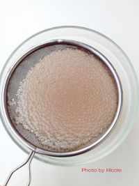

<style>
/* custom */
section[data-id="4"] {
    /*background-color: #3498db;*/
}
section[data-id="4"] .box1 {
    left: 84px; top: 48px;
}
section[data-id="4"] .box2 {
    left: 19px; top: 351px;
}
section[data-id="4"] .box3 {
    left: 25px; top: 420px;
}
section[data-id="4"] .box3 p {
    width: 224px;
}
</style>


<!-- 第四屏 -->
<voice-pig id="voice-4" text="part4:待西米完全变透明时，用网筛捞起，过几遍凉开水，直至降温" onplay="" onplaying="" onstop="window.goNext()"></voice-pig>
<section class="page page4">
    <div class="box1 animated bounceInDown">
        
    </div>
    <div class="box2 animated fadeInRight">
        <i>4</i>
    </div>
    <div class="box3 animated fadeInLeft">
        <p>待西米完全变透明时，用网筛捞起，过几遍凉开水，直至降温</p>
    </div>
</section>
